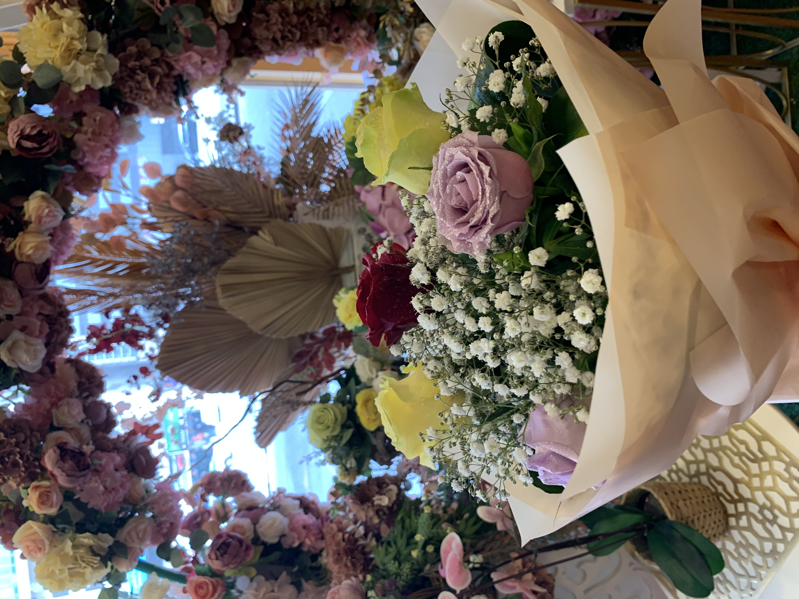
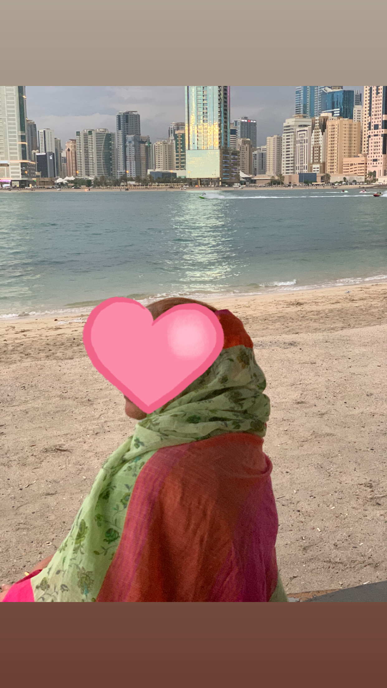
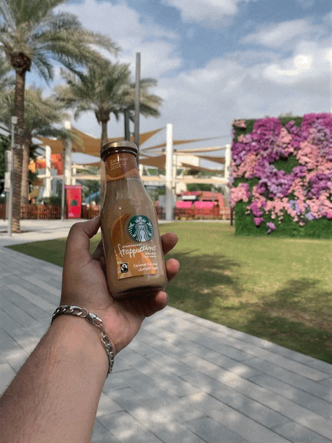
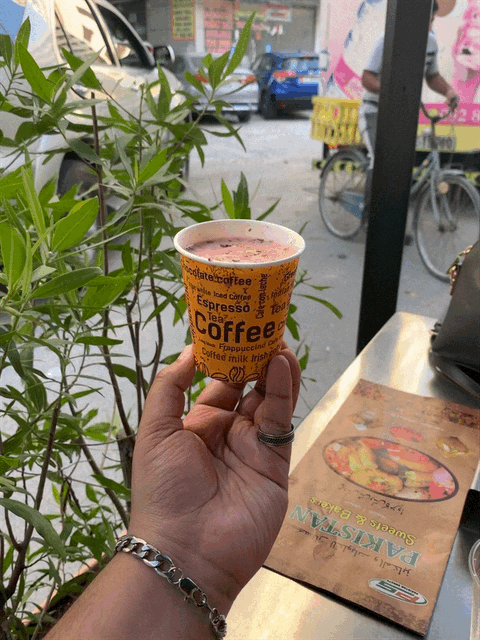

Computer Science @ ASU
I once believed that home could never change, but visiting my grandmother challenged that idea. Growing up in Dubai, going back home was always a special experience. Every holiday, we would visit, but this time was different because it was my last visit, so it holds a special place in my heart. What made this trip particularly memorable was that I got to surprise my grandmother with a bouquet of flowers, take her on a beach date, visit the historic Dubai Expo 2020, and end the day with my favorite Kashmiri chai at a café I have loved since childhood.
Navigate to the Work section to see the full photo journey of my trip.
View My JourneyA photo journey through my last visit to Dubai

Stop 01One of the most special moments of the trip was surprising my grandmother with a bouquet of flowers. The look on her face made the long journey completely worth it.

Stop 02After the surprise, grandma and I went on a beach date along the beautiful Dubai coastline. It was a peaceful and unforgettable moment between the two of us.

Stop 03We visited Dubai Expo 2020, the largest world exposition ever held in the Middle East. We explored multiple pavilions from countries around the world and took a well-deserved coffee break in between.

Stop 04We ended the perfect day at my favorite cafe, where I have been enjoying Kashmiri chai since I was a child growing up in Dubai. Some things never change.
This site was created by Suhaib Siddiqui for JMC 102 at Arizona State University in the Spring 2026 semester.